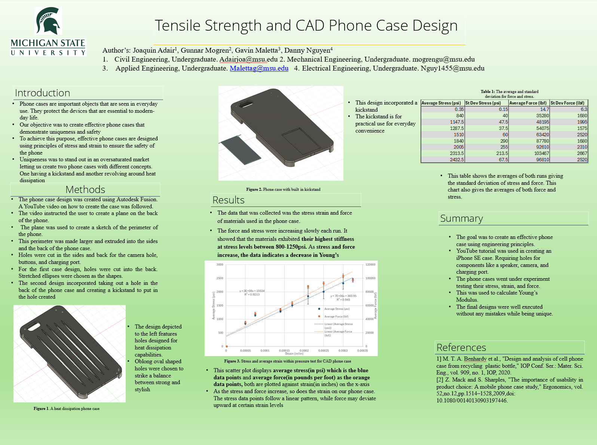
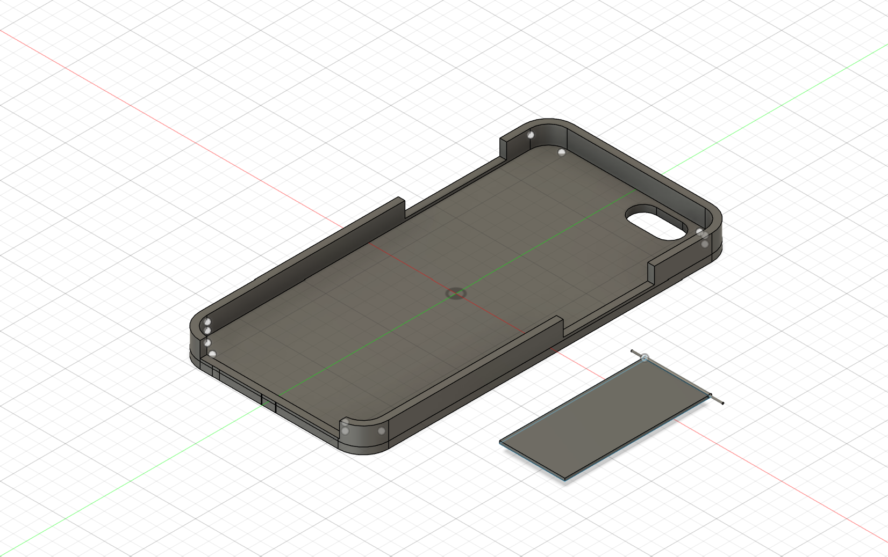
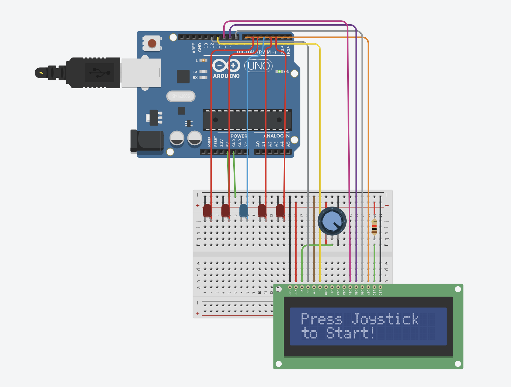
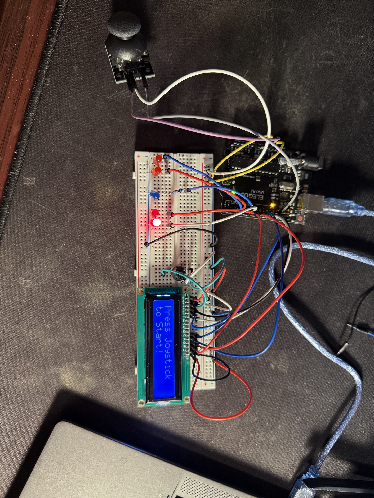
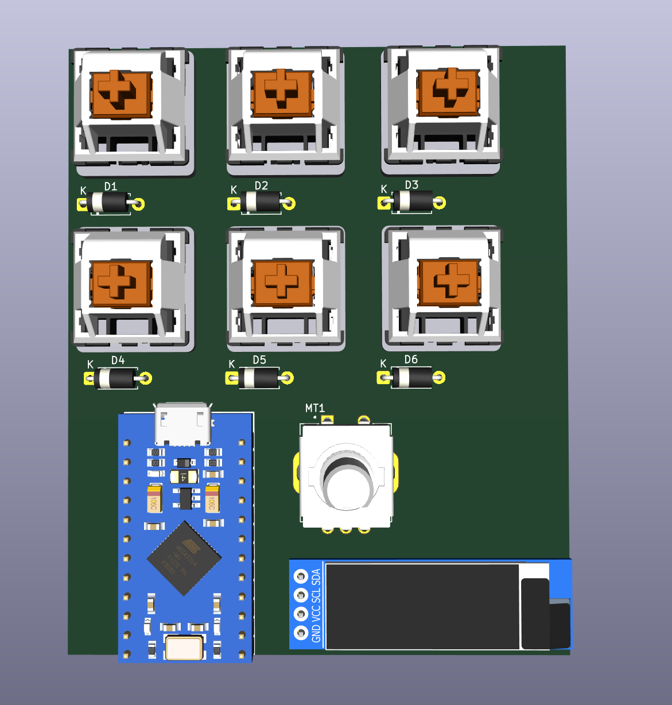
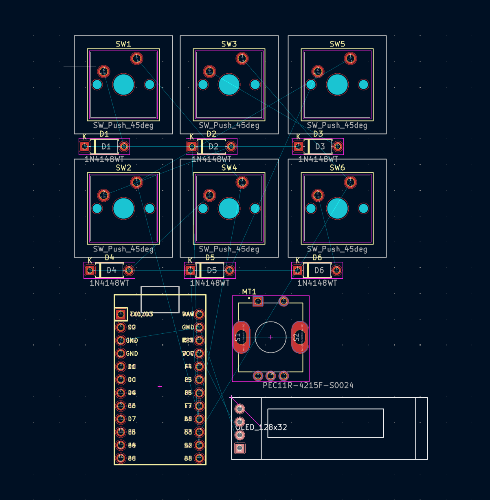
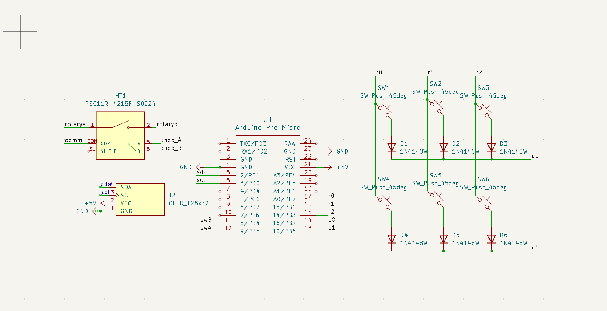

Portfolio
LinkedIn

Tensile Strength & CAD Phone Case Design
EGR 100 Group Project · Michigan State University
My first CAD experience, built for my Engineering 100 course at MSU. Our team designed a phone case that needed to be unique while still withstanding force, modeled it in Autodesk Fusion 360, and ran tensile strength testing on the final design.


Joystick Timing Game
Personal Project
A simple reaction/timing game built with a joystick and LEDs on a breadboard, inspired by a game I saw and wanted to recreate. Used an LCD 1602 display for the first time to show game prompts.



IEEE Macro Pad
MSU IEEE Club
My first PCB design, built with Michigan State's IEEE chapter. Designed the schematic and board layout in KiCad for a 6-key macro pad with a rotary encoder and OLED display.